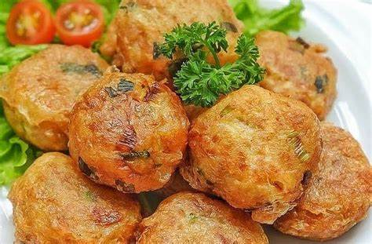

Potato Cakes

According to history, this cake was adapted from frikadeller or frikadel in Dutch, which is a kind of minced meat that is compressed and then fried. This food was originally introduced by the Dutch when they colonized Indonesia. However, in Indonesia the main ingredient of this meat is replaced with ingredients from potatoes that are mashed, then fried.
Ingredients :
- 1 kg of potatoes
- Fried onions to taste - Leeks to taste, finely sliced
- salt to taste
- Seasoning to taste
- Pepper powder to taste
- 1 egg (beaten off)
- 6 cloves of shallot
- cloves of garlic
How to make :
- Peel the potatoes, wash them, cut them into pieces, then fry them. Drain then knead until smooth.
- Mix the mashed potatoes with ground spices, leek leaves, salt, flavorings, pepper powder and fried onions. Mix well, taste test.
- Take a little dough, round shape. Then flatten, do it until the dough runs out.
- Take a little dough, round shape. Then flatten, do it until the dough runs out.